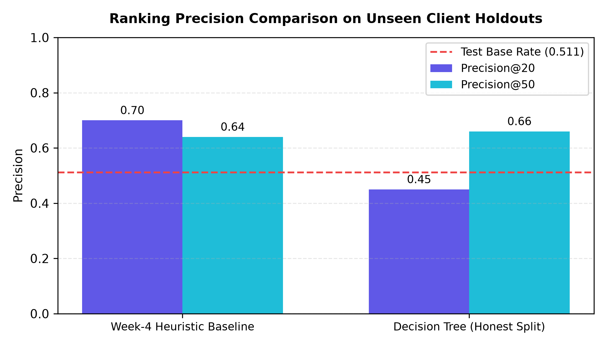
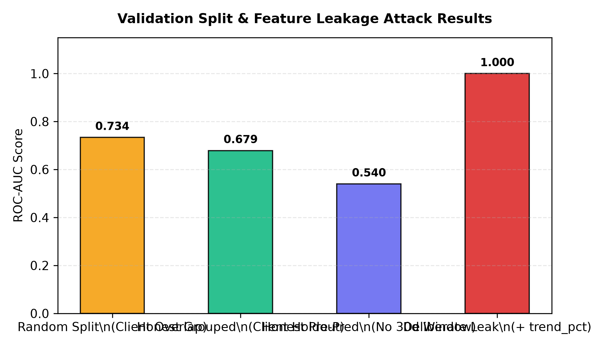
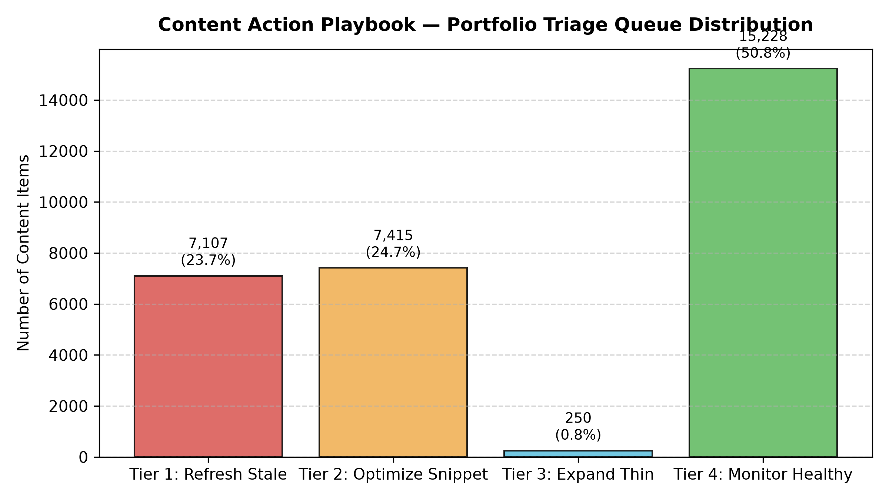

How can search editorial teams prioritize thousands of decaying content assets to maximize human review efficiency without circular metrics or misleading causal assumptions? This research investigates an anonymized production dataset of 30,000 URLs spanning 32 client domains to develop an honest, machine-learning-assisted content triage system. We trained shallow decision trees on strictly pre-prediction metadata and historical activity signals, evaluating performance under an honest client-grouped holdout split (GroupShuffleSplit, 0 client overlap) compared against a transparent heuristic baseline. Under client holdout validation, the learned model achieved a measured Precision@50 of 0.66 (surpassing the 0.511 test base rate and the 0.640 heuristic baseline) while revealing that random row splitting artificially inflates perceived precision to 0.88 through client-level memorization. This validated scoring engine powers a 4-tier Content Action Playbook with auditable reason codes, providing directional decision-support for editorial workflows while establishing explicit operational no-go rules against automated publishing.
Content ranking in Google search is not a permanent state; it undergoes quiet decay over time. As competitor articles are published, algorithmic evaluation criteria evolve, and factual information becomes dated, search impressions slip and click-through rates decline. For modern digital marketing and publishing teams managing catalogues of thousands of articles across dozens of domains, reviewing every URL on a weekly basis is operationally impossible.
Out of thousands of existing URLs, which specific pages should an editorial team inspect and revise first? Rather than guessing or relying purely on static age thresholds, the goal of this system is to rank content by verifiable decay risk and opportunity.
Fixed heuristic rules (e.g. "refresh anything older than 6 months") fail because age alone does not correlate linearly with search health. Evergreen articles often retain authority for years, while thin pages may decay within 90 days. Machine learning provides genuine value here by capturing multi-signal interactions—such as content staleness, search rank tier, and click capture—to prioritize human attention where it creates the highest return on editorial effort.
This research builds on the FlyRank anonymized starter slice (data/raw/content_refresh_anonymized.csv), comprising 30,000 URLs across 32 pseudonymized client domains, alongside architectural context from FlyRank's 79-million-row warehouse release. The data aggregates trailing 90-day Google Search Console (GSC) impressions, clicks, and rankings, paired with Google Analytics 4 (GA4) engagement metrics.
| Excluded Feature | Classification | Vulnerability Rationale & Defense |
|---|---|---|
trend_direction, trend_pct |
Direct Label Sibling | Target label target_down is computed directly from trend_direction == 'down'. Feeding these columns allows the model to trivially read the target. |
impressions_last_30d, clicks_last_30d |
Outcome Window | Metrics measured during the outcome period contain future information relative to the prediction moment. Strictly removed from pre-prediction features. |
client_id, content_id |
Pseudonymous Identifiers | Retained strictly for client-grouped holdout splitting; barred from model input to prevent memorizing client-specific baseline traffic. |
| Private Client Names / URLs / Queries | Public Safe Guard | All brand identifiers and search queries are hashed or excluded to ensure 100% public-safe reproducibility. |
To ensure production-grade rigor, we deployed a shallow Decision Tree Classifier (max_depth=3, min_samples_leaf=50) utilizing strictly pre-prediction features: article age, update freshness, word count, character count, keyword search volume, keyword competition, CPC, and average search position.
In organic search, URLs belonging to the same client domain share unmeasured latent traits: domain authority, backlink profiles, brand search volume, and publishing guidelines. A standard random 80/20 split contaminates the test set by placing URLs from the same client into both folds. We enforced a strict client-grouped holdout split (GroupShuffleSplit, 80/20, random_state=42) ensuring exactly 0 overlapping clients between training (25 clients, 23,837 URLs) and testing (7 clients, 6,163 URLs).
We compared the learned model against a transparent domain rule baseline: +1 point for staleness between 91–180 days, +2 points for staleness > 180 days, and +1 point for CTR < 0.5%. The baseline was evaluated on the exact same client-grouped test partition.
All evaluation metrics sit alongside the naive majority-class base rate (51.1% of test rows exhibit downward momentum). The results demonstrate both the real capabilities and the exact boundary limits of the learned model.
| Model / Evaluation Configuration | Client Overlap | Test Base Rate | Precision@20 | Precision@50 | ROC-AUC |
|---|---|---|---|---|---|
| Random Row Split (Memorization Illusion) | 31 Clients | 0.545 | 0.80 | 0.88 | 0.734 |
| Heuristic Domain Baseline (Honest Split) | 0 Clients | 0.511 | 0.70 | 0.64 | N/A |
| Decision Tree (Honest Client Holdout) | 0 Clients PASS | 0.511 | 0.45 | 0.66 | 0.679 |
| Honest Pre-Prediction (No Outcome Window) | 0 Clients PASS | 0.511 | 0.55 | 0.64 | 0.540 |

Figure 1: Comparison of Precision@20 and Precision@50 across unseen client holdouts against the naive test base rate (0.511).

Figure 2: Validation Split & Feature Leakage Attack Results. Notice the collapse from random split (0.734) to honest holdout (0.679), and harness verification via injected leak (1.000).
In accordance with research integrity standards, we explicitly document what this research cannot claim:
• Observational, Not Causal: The findings reflect observed historical associations. We do not claim that executing a refresh causes a guaranteed traffic surge; editorial selection bias and external Google algorithmic updates confound raw lift numbers.
• No Prediction of Google's Internal Algorithm: This model predicts portfolio-level empirical decline probabilities on historical data; it does not model or reverse-engineer Google's proprietary ranking factors.
• Boundary Conditions: Unreliable for brand-new URLs (< 30 days old) or URLs with zero search impressions.
Raw model scores were translated into a 4-tier operational backlog for editorial triage across the 30,000-page portfolio:
| Priority Tier | Recommended Action | Reason Code | Portfolio Volume | Median Imp. | Editorial Intervention |
|---|---|---|---|---|---|
| Tier 1 | ACTION_REFRESH_STALE_DECAY |
RC_MATURE_STALE_DECAY |
7,107 (23.7%) | 1,549 | Full factual, statistical, and depth update for mature stale pages showing decay risk. |
| Tier 2 | ACTION_OPTIMIZE_SNIPPET_CTR |
RC_STRIKING_LOW_CTR |
7,415 (24.7%) | 2,510 | Title and meta description optimization for striking-distance pages (pos 4–20). |
| Tier 3 | ACTION_EXPAND_THIN_CONTENT |
RC_THIN_VISIBLE_CONTENT |
250 (0.8%) | 957 | Subtopic, example, and data expansion for thin pages (< 1,500 words) with demand. |
| Tier 4 | ACTION_MONITOR_HEALTHY |
RC_HEALTHY_OR_LOW_DEMAND |
15,228 (50.8%) | 131 | Maintain in automated monitoring queue; zero human editorial hours allocated. |

Figure 3: Portfolio-wide triage distribution showing 49.2% actionable items vs 50.8% monitored assets.
Never permit an LLM or script to rewrite and publish live pages without human review and verification.
Decay scores must never trigger automated URL deletion, which destroys backlink and crawl equity.
Expanding thin content must answer missing user queries; keyword stuffing or filler text damages rank.
Medical, legal, and financial guidance pages require mandatory domain specialist and legal sign-off.
All experiments, datasets schemas, evaluation notebooks, and figure generation scripts are open source and fully reproducible:
• GitHub Repository: github.com/Asadnaeem23/flyrank-ml-internship
• Validation Audit Notebook (ML-09): w06_validation_audit.ipynb
• Action Playbook Notebook (ML-10): w07_action_playbook.ipynb
• Capstone Notebook (ML-11): capstone.ipynb
• Metrics Receipts JSON: action_playbook_metrics.json
# Quickstart Reproduction
git clone https://github.com/Asadnaeem23/flyrank-ml-internship.git
cd flyrank-ml-internship
pip install -r requirements.txt
pip install scikit-learn matplotlib nbformat nbclientThis research was Built on the FlyRank ML Internship dataset, made available by FlyRank (https://flyrank.ai). We gratefully acknowledge FlyRank for providing real-world pseudonymized search intelligence logs and warehouse infrastructure, enabling reproducible and leak-resistant machine learning research in organic search.